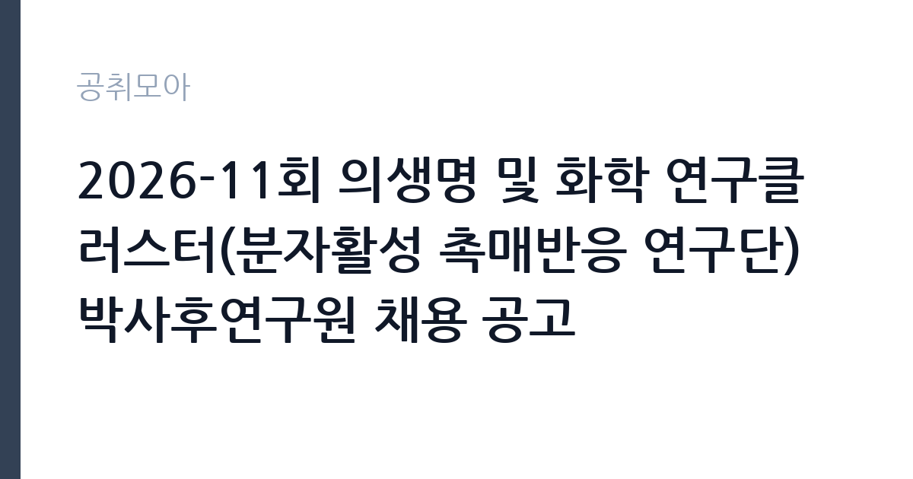

[공공기관] 2026-11회 의생명 및 화학 연구클러스터(분자활성 촉매반응 연구단) 박사후연구원 채용 공고
기초과학연구원 · 대전 · 마감 2026-10-27 (D-16) · 출처 잡알리오

한눈에 보는 모집 조건
| 기관 | 기초과학연구원 |
|---|---|
| 공고명 | 2026-11회 의생명 및 화학 연구클러스터(분자활성 촉매반응 연구단) 박사후연구원 채용 공고 |
| 고용형태 | 정규직 |
| 근무지 | 대전 |
| 게시일 | 2026-10-12 |
| 마감일 | 2026-10-27 (D-16) |
지원자격, 이렇게 읽으세요
- 공공기관 채용공시
- 세부 조건은 원문 공고문 확인
모집분야별 지원자격의 세부 내용은 공고문에서 확인해야 하며, 공통 응시자격으로 국가공무원법상 임용 결격사유가 없어야 하고, 부패방지법상 비위면직자에 해당하지 않아야 하며, 해외여행에 결격사유가 없어야 합니다. 남자는 병역을 마쳤거나 면제되어야 하고, 전문연구요원 지원 가능 공고인 경우 전직자에 한해 지원이 가능합니다. 화학 관련 분야 박사학위 소지자와 임용예정일 기준 3개월 이내 학위 취득 예정자가 일반적인 대상이므로 원문에서 대조하십시오.
이 공고의 포인트
이 공고의 매력은 분자활성 촉매반응이라는 선도 연구 주제에 있습니다. 촉매 설계와 반응 메커니즘 규명은 에너지와 환경 문제 해결로 직결되는 분야라, 여기서의 박사후 경력은 학계와 산업계 모두에서 평가받는 자산이 됩니다. 같은 날 게시된 지하실험연구단 공고보다 마감이 10일가량 빠르니, 화학 분야 지원자는 이 공고를 먼저 챙기셔야 합니다. 초임계약 후 재계약으로 최대 3년까지 근무할 수 있는 구조입니다.
전형은 어떻게 진행되나
IBS 채용 홈페이지를 통해 원서를 접수합니다. 서류심사와 발표심사, 면접심사를 거쳐 최종 합격자를 선발하는 것이 일반적인 흐름이며, 연구실적과 연구계획서가 핵심 심사 자료입니다. 접수 마감이 10월 27일로 촉박하니 서류 준비를 공고 직후 시작하십시오. 단계별 일정은 원문 공고문에서 확인하시기를 권합니다.
원문에서 확인한 전형 방식
ㅇ 채용공고문에서 제시한 지원자격을 충족하는 자 - 모집분야별 지원자격 등 세부 내용은 공고문 참고 [응시자격 공통] ㅇ「국가공무원법」제33조 및 연구원 규정에 의한 임용 결격사유가 없는 자 ㅇ「부패방지 및 국민권익위원회의 설치와 운영에 관한 법률」제82조에 따른 비위면직자에 해당하지 않는 자 ㅇ 해외여행에 결격사유가 없는 자로 남자의 경우 병역필 또는 면제자 - 전문연구요원 지원 가능 공고인 경우, 전직자에 한해 지원 가능 ㅇ 응시서류접수 마감일 기준 지원자격 충족자
이런 분께 추천해요
- 화학이나 촉매, 물리화학 관련 분야 박사학위 소지자입니다. 분자활성화 연구와의 전공 연결이 서류 심사의 관건입니다.
- 기초과학 대형 연구단에서 박사후 과정을 밟고 싶은 연구자입니다. 연구비와 연구 인프라가 갖춰진 환경에서 성과에 집중할 수 있습니다.
- 대전 본원 근무가 가능하고 10월 27일 마감에 맞춰 서류를 제출할 수 있는 분입니다.
지원 전 체크리스트
- 모집분야의 세부 지원자격과 우대사항을 원문 공고문에서 확인하셨습니까.
- 연구실적 목록과 연구계획서, 학위 증빙을 모두 준비하셨습니까.
- 접수 마감이 10월 27일로 촉박함을 감안해 제출 일정을 정하셨습니까.
- 전문연구요원 해당 여부와 병역 사항을 정리하셨습니까.
모집 일정과 제출 타이밍
공고 게시일은 2026년 10월 12일이며 접수 마감은 10월 27일입니다. 접수 기간이 2주 남짓으로 촉박하므로, 연구계획서 초안은 이번 주 안에 완성하고 추천서는 즉시 요청하십시오. 마감 당일 온라인 접수가 몰릴 수 있으니 하루 전 제출을 목표로 하십시오.
직무 이해하기: 공공기관
분자활성 촉매반응 연구단은 작고 안정한 분자를 활성화하는 촉매 개발과 반응 메커니즘 규명을 수행합니다. 박사후연구원은 촉매 합성과 반응 실험, 계산화학과 분광 분석을 통한 메커니즘 연구, 논문 작성을 맡습니다. 의생명 및 화학 연구클러스터 소속으로 관련 연구단과의 공동연구 기회도 열려 있습니다.
자기소개서 작성 팁
연구계획서는 본인의 박사 연구와 촉매반응 연구의 연결고리를 중심으로 쓰십시오. 다룬 촉매계와 반응, 규명한 메커니즘을 구체적으로 서술하시고, 입단 후 수행할 연구 주제와 기대 성과를 명시하십시오. 대표 논문의 본인 기여도를 정확히 밝히시기를 권합니다.
면접 준비 포인트
면접에서는 발표심사를 통해 연구 내용과 향후 계획을 평가합니다. 촉매반응 메커니즘에 대한 깊이 있는 질의가 나올 수 있으니 본인 연구의 핵심을 간결하게 설명하는 연습을 하시고, 연구단 과제와의 시너지를 답변에 녹이십시오.
급여·근무조건 읽는 법
IBS 박사후연구원의 연봉은 5,500만원 이상으로 안내된 바 있으며, 연구원 내규의 pay-band가 적용됩니다. 성과급과 복지카드 같은 복지가 제공되는 것이 IBS 채용 공고의 관례였습니다. 정확한 초임 연봉과 계약 조건은 이번 공고문의 채용조건에서 확인하셔야 합니다.
자주 묻는 질문
- 지하실험연구단 공고와 중복 지원이 가능합니까?
별개의 채용 건이므로 각각 지원이 가능한 것이 일반적이나, 전공 fit이 전혀 다른 분야입니다. 본인의 연구 주제와 맞는 연구단에 집중하는 편이 합격 가능성이 높습니다. - 박사후연구원 계약은 최대 몇 년입니까?
초임계약 후 1회에 한해 재계약이 가능하며, 박사후연구원은 최대 3년까지 근무할 수 있습니다. 재계약 시 연구실적 평가를 실시합니다. - 임용 예정일은 언제입니까?
IBS 채용은 임용예정일을 공고문에 명시하고 협의를 거쳐 조정하는 것이 관례입니다. 입사 가능 시기와 조율 여부는 원문 공고문에서 확인하십시오.
함께 보면 좋은 공고
[공공기관] 2026년도 한국임업진흥원 제3차 인재채용(보훈특별고용) 공고 — 마감 2026-11-02[공공기관] 2026년 제6차 국립생태원 기간제근로자(수탁과제) 채용 재공고 — 마감 2026-10-21[공공기관] 한전KDN(주) 대구본부 정보통신설비 유지보수 일용근로자 모집공고 — 마감 2026-10-26출처: 잡알리오 공개정보를 바탕으로 공취모아가 정리한 안내글입니다. 모집 조건·일정은 변경될 수 있으니 지원 전 반드시 원문 공고문을 확인하세요. 본 글은 정보 제공용이며 합격을 보장하지 않습니다.